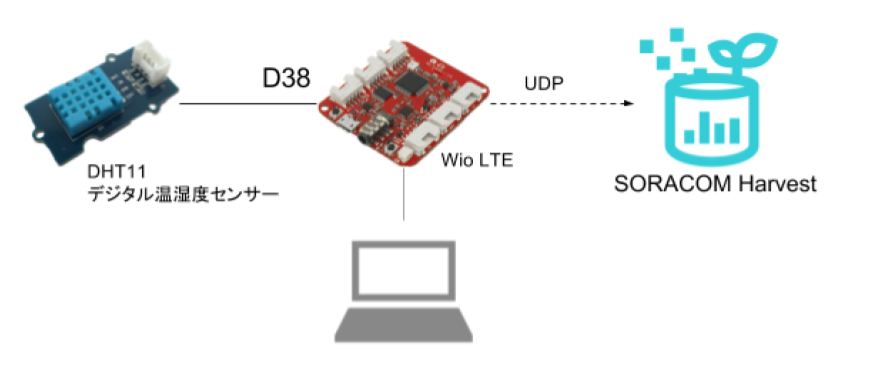

SORACOM SIM を搭載した Wio LTE に温湿度センサーを取り付け、温湿度データを可視化サービス SORACOM Harvestと、ダッシュボード作成・共有サービス SORACOM Lagoon を使って表示します。
SORACOM Webコンソール ( https://console.soracom.io/#/signup) にアクセスします。
使用する SIM の種類を選択します。日本向けの SORACOM Air SIM を利用する場合は、カバレッジタイプ Japan を選択します。
「アカウント作成」画面が表示されますのでメールアドレスおよびパスワードを入力します。 また、契約者が個人であるか法人であるかを選び、法人の場合はさらに契約者の情報を入力します。 最後に規約に同意するためのチェックボックスを入れ、「アカウントを作成」ボタンを押します。
[アカウントを作成] ボタンをクリックします。
下記の画面が表示されるので、メールを確認してください。
メールが届いたらリンクをクリックしてください。
自動的にログイン画面に遷移しますので、メールアドレスとパスワードを入力してログインしてください。
通信料の支払い方法はクレジットカードになります。クレジットカードの情報を登録するには、メイン画面上部のユーザー名から[お支払い方法設定]を開きます。
お支払方法で各情報を入力し、支払い方法を登録します。
ユーザーコンソールにログインして、Air SIM の登録を行います。左上の [SIM登録] ボタンをクリックします。
「SIM登録」画面で、Air SIM の台紙の裏面に貼ってある IMSI と PASSCODE を入力してください。
名前、グループは空欄のままでも構いません。 「技術基準適合証明等について確認しました」チェックボックスを付けてください。 [登録] を押して SIM 登録を完了してください。（複数の Air SIM を続けて登録することも可能です。）
Air SIM を登録した直後の状態は「準備完了」と表示され、通信可能な状態になっています。ただし、まだセッションは確立されていないので、セッション状態は「オフライン」になっていることを確認してください。
Wio LTE は Seeed Studio が開発・販売しているマイコンモジュールです
Grove コネクタと STM32F4 マイコン、LTE Cat.1 モジュールが搭載されており、 Arduino IDE で素早くプロトタイピングができます
アンテナの取り付けはかなり力を要しますが、無理をしないようお願いいたします。
取付け方
外し方
温度センサー (DHT11) 付属の 「Grove コネクタケーブル」を使ってWio LTE の「D38」へ取り付けます
クラウド側のシステムを用意せず、まずデバイスとセルラー通信の稼働を確認するために、SORACOM Harvest による可視化を行います
構築対象システムを減少することができるため、コンポーネントの動作確認を一つづつ確認していく事ができることを学びます

SORACOM Webコンソール ( https://console.soracom.io ) で 左上[Menu] > [SIM グループ]
[追加] で、SIMグループを作成します
グループ名 harvest もしくは 任意 でかまいません
先ほど作成した SIMグループ をクリックすると、グループの詳細が開きます
SIM グループの詳細で SORACOM Harvest の設定 開き、SORACOM Harvest を ON にし、保存をクリックします
先ほど設定した SIM グループへ、 Wio LTE に挿している SIM を所属させます
左上[Menu] > [SIM 管理]
Wio LTE に取り付けている SIM を選択 > [操作] > [所属グループ変更]
先ほど作成した SIMグループ に所属させる
以下のように SIM がさきほど登録した SIMグループ になっていることが確認できます
この状態で "Wio LTE" と書かれている SIM は SORACOM Harvest が使用可能な状態になりました
Wio LTE と PC を microUSB ケーブルで接続してください
Wio LTE に電源が供給されると Wio LTE にあらかじめ書き込まれたプログラムが開始されます
※お配りした Wio LTE には「D38 に接続されたデジタル温湿度センサーを SORACOM Harvest に送信する」プログラムが書き込まれています
送信されたデータを SORACOM Harvest で確認してみましょう
左上[Menu] > [SIM 管理]
以下のように、温度・湿度のデータが、それぞれ temp humi として SORACOM Harvest 上で可視化されています
※自動更新を ON にすることで、半リアルタイムにグラフが描画されます
SORACOM Harvest の見方、機能
SORACOM Harvest は SORACOM アカウント内でデバイスからのデータをいち早く確認するためのツールですが、ビジネスで活用しようとした場合はデータの活用が必須となります。
具体的には「データの共有」と「条件によるアラート」です。
SORACOM Lagoon はその二つを備えており、SORACOM Harvest に蓄積されたデータを即座に活用することが可能です。
SORACOM Lagoonとは
SORACOM Lagoon はダッシュボードを作成し、"SORACOM Lagoon ユーザー" と共有できるサービスです。SORACOM Lagoon ユーザーは SORACOM アカウントを持っていれば自由に作成・管理可能で、だれと共有するかを決めることができます。
その他、条件を設定し、Email や Slack、LINEといったメッセージングツールへのアラート送信も可能です。